Scenarios
| # | Scenario | Status | Headline |
|---|---|---|---|
| 4.1 | Item question | ✅ Passed | Badge after 18–23 s (one 20 s tick), bold "Rzecz" row, badge clears on open, reply seen after 5.2 s |
| 4.2 | Crossing messages (H1) | ✅ Passed | A-1, B-1, A-2 converge to the server order in both browsers within 8 s, and again after re-entering |
| 4.3 | Item button states | ✅ Passed | Hidden for the owner and on deleted items; deleted thread shows "(usunięte)" and stays writable |
| 4.4 | Term page buttons | ✅ Passed | All 10 role/visibility combinations match the spec matrix |
| 4.5 | Organizer entry points | ✅ Passed | "Czat grupy" card (PRIVATE only) and "Napisz do uczestników" |
| 4.6 | Group chat, 3 users | ✅ Passed | Sender names, "Organizator" chip, "3 uczestników", "dzisiaj" separator |
| 4.7 | Read-only states | ✅ Passed | "Grupa publiczna" banner, send 409; deleted takes precedence with "Grupa usunięta" |
| 4.8 | Deep links | ⚠️ Passed with issues | Login redirect and return, not found, denied all correct; denied view keeps polling (m1) |
| 4.9 | Composer | ✅ Passed | Enter = newline, counter, disabled when empty, focus kept, 429 and fallback errors keep the text |
| 4.10 | Scrolling | ❌ Failed | Opens at the bottom and auto-load keeps position, but the button click jumps about 576 px (M2) |
| 4.11 | Layout 320 / 360 | ❌ Failed | Document scroll leak (M1); brand wraps at 320, link truncated (m2) |
| 4.12 | Local times | ✅ Passed | 14:38 UTC → "16:38"; TERM title "Termin: pt 30.10 18:00" |
| 4.13 | SC16 mockups | ✅ Passed | 5 ✓ 2 ⚠ 0 ✗, see visual fidelity |
4.1 Item question ✅
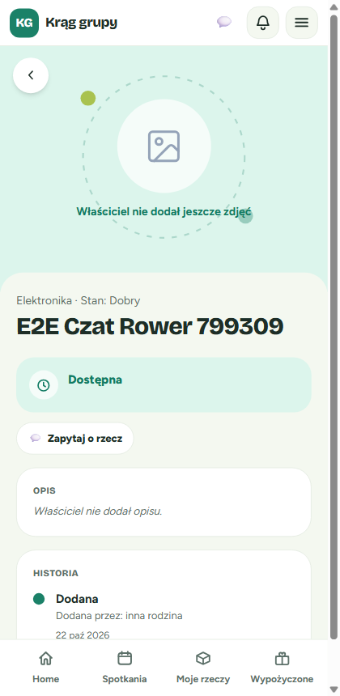
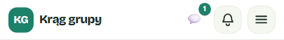

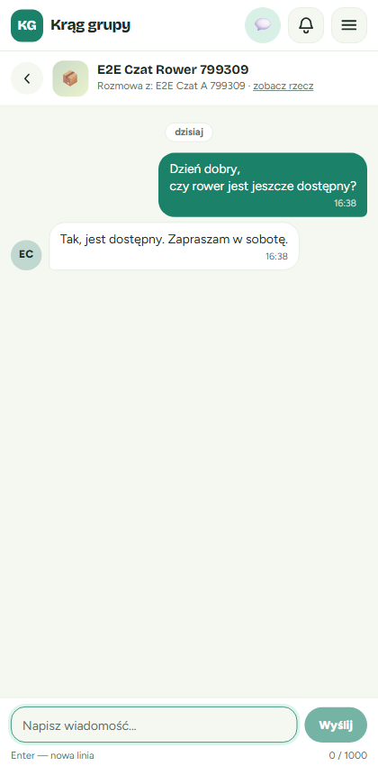
4.2 Crossing messages (H1) ✅
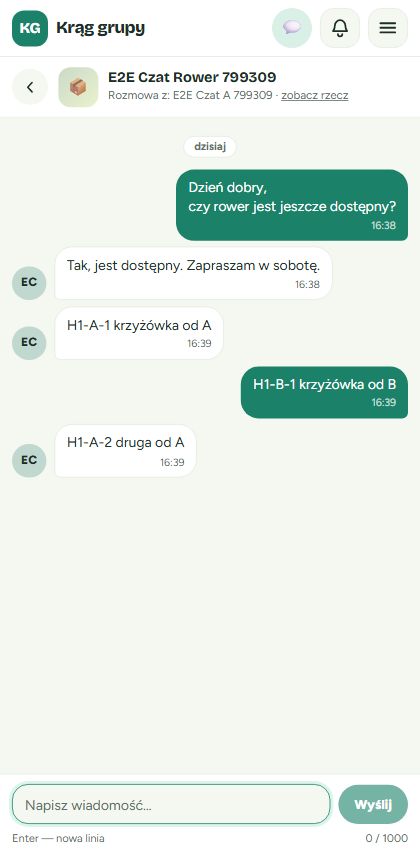
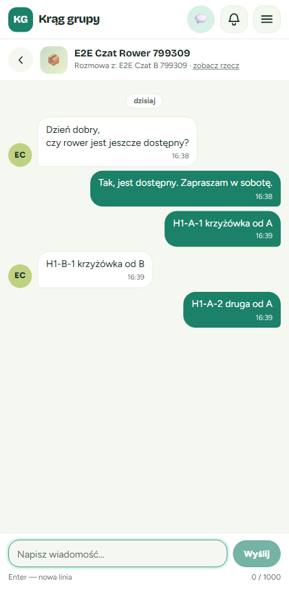
4.3–4.7 Gating and read-only ✅
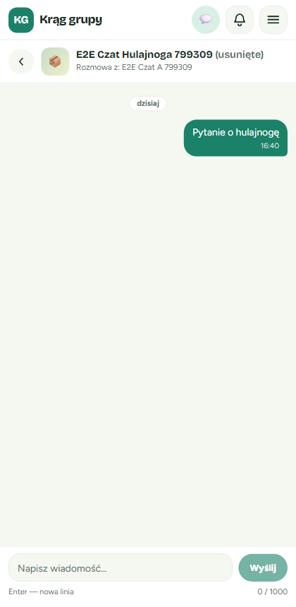
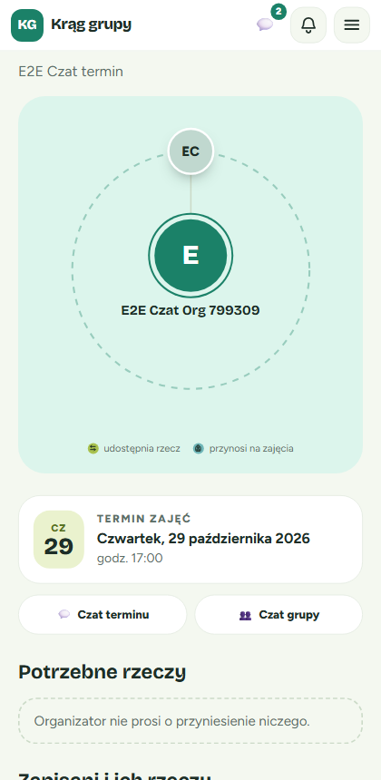
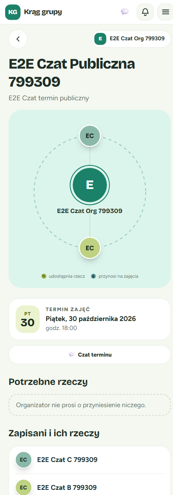
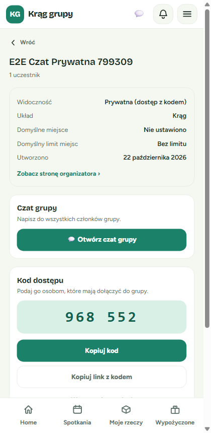
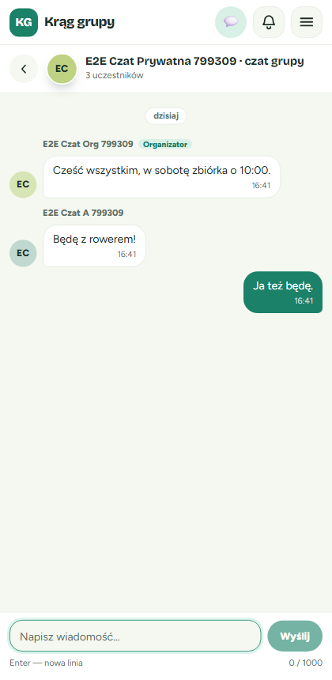
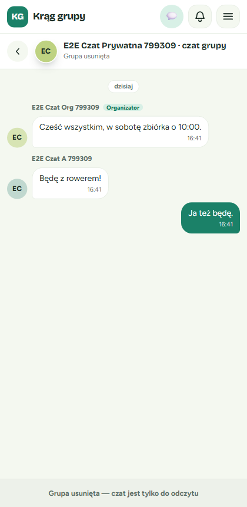
4.8–4.9 Deep links and composer
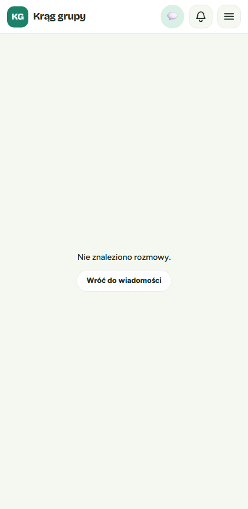
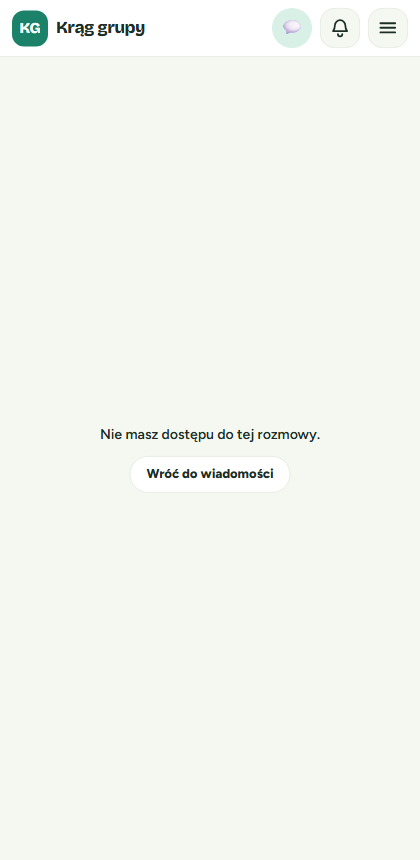
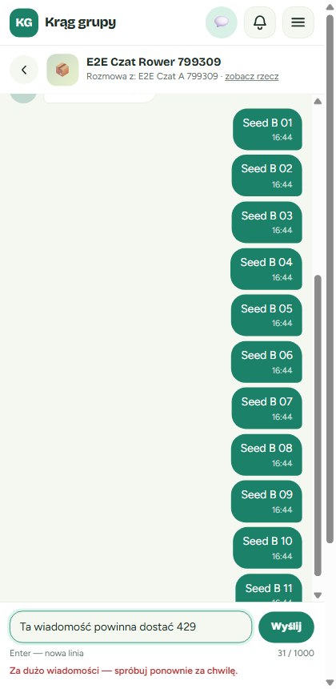
4.10–4.11 Scrolling and layout ❌
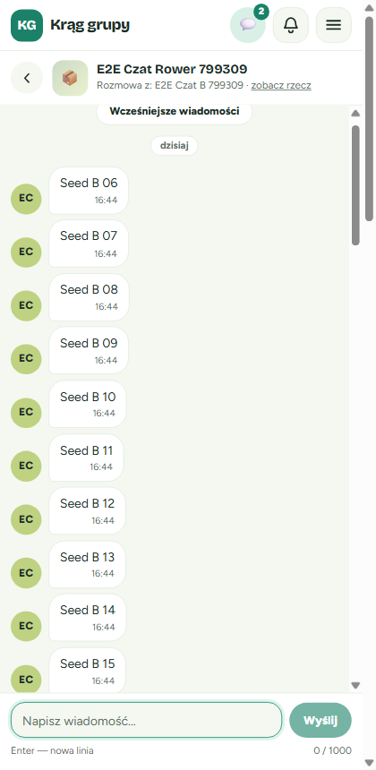
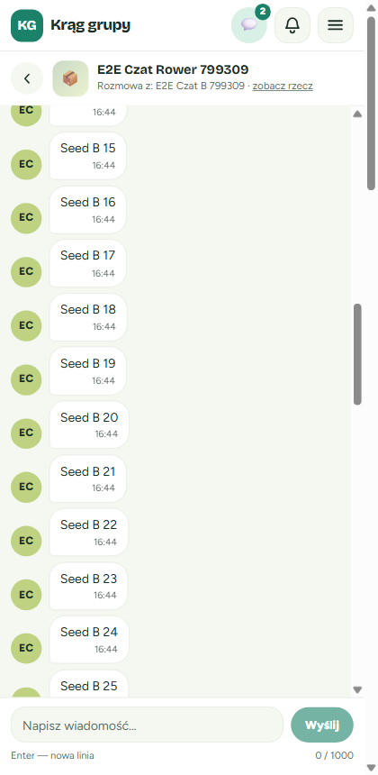
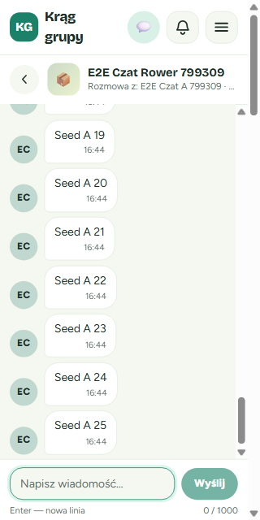
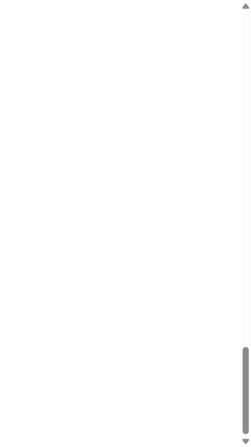
Discrepancies
majorM1: ThreadPage document scroll leak. 50 .sr-only spans (position:absolute) in a static role="log" scroller extend the document to 3098 px; the window can scroll to a blank page with no top bar or composer. Fix: add relative to the log container (or the bubble).
majorM2: "Wcześniejsze wiadomości" button jumps. scrollTop 20 → 1171, anchor y 185 → −391. Chromium scroll anchoring and the manual scrollHeight delta both compensate. The auto-load at scrollTop 0 is correct. Fix: overflow-anchor: none on the log.
minorm1: Denied or not-found thread keeps polling. GET …/messages returns 403 every 5 s; useThread has no error gating on refetchInterval.
minorm2: 320 px top bar wraps / "zobacz rzecz" clipped. Bar 68 px instead of 57 px; the link is truncated at 360 px and hidden at 320 px.
Console & Network
| Source | Message | Impact |
|---|---|---|
GET /api/organizations/mine | 404 | Pre-existing, unrelated |
GET …/messages poll | 403/404/400 every 5 s on denied/notFound | m1 |
POST …/messages | 409 / 429 | Expected (provoked by the tests) |
No uncaught JS exceptions.
Exit criteria
| Criterion | Status |
|---|---|
| SC2 Item conversations | ✅ |
| SC3 Access per kind | ✅ |
| SC4 Read-only | ✅ |
| SC6 Rate limit 429 | ✅ |
| SC7 Read markers / uncapped count | ✅ |
| SC9 Paging and ordering | ⚠️ (M2) |
| SC10 unread-count routed | ✅ |
| SC12 Polling 20 s / 5 s | ✅ |
| SC13 Local time | ✅ |
| SC14 View states | ✅ |
| SC15 Entry points | ✅ |
| SC16 Mockup fidelity | ✅ (5 ✓ 2 ⚠) |
Re-check after fixes
| Item | Result | Evidence |
|---|---|---|
| M1 scroll leak | ✅ PASS: docH 640 = viewport at 320/360; window scrollY stays 0 | shot |
| M2 button jump | ✅ PASS: anchor y 185 → 185; auto-load at top y 205 → 205 | shot |
| m1 polling | ✅ PASS: denied/notFound make one /messages call, then none for 13 s; healthy thread still polls (2.6 s) | shot |
| m2 narrow header | ✅ PASS: top bar 57 px at 320; "zobacz rzecz" fully visible at 320/360 | shot |


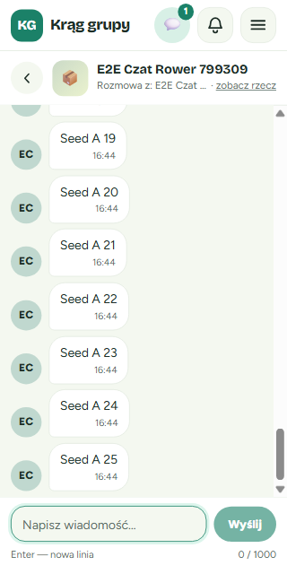
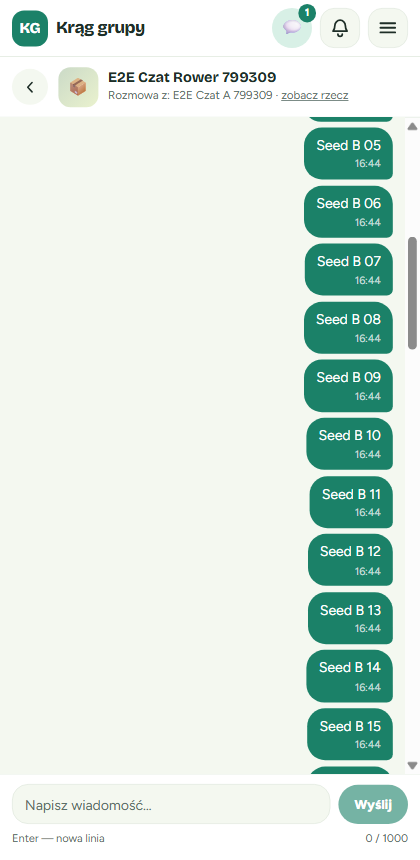
Updated verdict: ✅ GO, with 13/13 scenarios passing.
Recommendations
Must fix before merge: M1, M2. Should fix soon: m1, m2. Nice-to-have: a regression check that the document height equals the viewport on a 50+ message thread.
Next step: fix, then merge. Re-check scenario 4.10 step 4 and scenario 4.11 step 4.